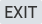
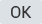
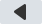
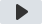
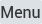

Xuper Hydra
v4.99.2
Búsqueda popular
Actualizar
Total:
10
No hay resultados
1. Intente nuevamente usando el nombre de la película, serie, director o actor para obtener un resultado más preciso.
2. Para buscar canales en vivo, vaya a canales en vivo en modo de pantalla completa
00:00:00
00:00:00

Salir

Pausa/Play

-10s

+10s

Ajustes (Abajo)
SELECCIÓN
IDIOMA
Configuración
OPCIONES DE REPRODUCTOR
✔
Reproductor 1
✔
Reproductor 2
FORMATO DE PANTALLA
✔
Pantalla completa
✔
Normal
✔
16:9
✔
4:3
Ajuste de reproducir
Audio
Subtítulo
OFF
Idioma
Tamaño
Pequeño
Normal
Grande
Estilo
Aa
Aa
Aa